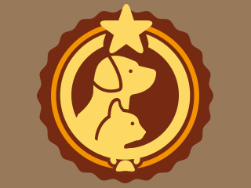

We Love Dates
First Date Guide
Choose somewhere that you are familiar with, that way you aren’t concentrating on what you have to do and you can give your full attention to your date. If you are stuck for locations why not check out the We Love Dates first date ideas for some inspiration, it’s easy, searchable by location and the hard work has been done for you!
Creating your Online dating profile
The beauty of the online dating profile is the power of the delete button! When you meet someone face-to-face with no prior introduction there is no way to rewind and take back that inappropriate comment that leaves you cringing, but on the online dating scene you have the opportunity to tailor and optimise that first impression with the power of the delete button.So be don’t be daunted by the profile section, just take your time and relax!
-
Keep it real and keep it honest
Honesty really is the best policy here, you don’t want to start a relationship on half truths and lies. It will backfire in the long run, you will be kicking yourself after the third weekend in a row that you get woken at the crack of dawn for an early morning hike when all you want to do is have a relaxing morning. Moral of the story, don’t write that you love hiking and the outdoors unless you really do!
-
This isn’t a CV,
So don’t go listing your job history and every tiny thing about yourself, what will you talk about on the first date otherwise. You want your profile to be great but you your date to think that you are even better in the flesh!
-
Speak confidently about yourself,
And email it to a trusted friend for them to review to make sure that you are keeping true to yourself.
-
Keep your profile up-to-date,
Make sure you keep it fresh and interesting. Your dates now aren’t going to be interested in your interests three years ago, they want to get to know the you in the present.
-
Take your time,
You want a profile that represents yourself best. Take time to decide how you want people to perceive you. You are trying to create a relationship that will last a lifetime, that takes more that five minutes prep work.
-
Clear and concise,
There is nothing more tiresomely boring than scrolling down and down through a page crammed to the brim with stale and useless text that just makes you want to curl up into bed and fall asleep - boring isn’t it, so don’t do it in your profile!
-

Write it
In a word type document and paste it in when you are happy with it.
-
Never Write
what you think someone else would like to read, stay true to yourself.
-
Finally, if you have had a bad day step away from the profile! Only edit your profile when you are in positive state of mind.
Choosing a Picture
So you have written your profile, now you need to choose a picture that will bring everything together. It is okay if you haven’t got any suitable photos, go out and arrange with a friend to have a photo shoot session. You have spent a lot of time and effort on your profile so far, so you deserve to have the best picture possible to complement it. When taking a photo a great time to do this is at dusk or dawn, the light is soft and flattering and you won’t have to use the flash (DON’T use the flash anyway, it is never flattering!).
DO's We have a few dos:
-
Make sure your photo is current, no more than 6 months old is a good rule of thumb, it all comes back to honesty!
-

Have a close up of your face as the main profile picture and include at least one whole body shot as a second. Perhaps you doing a hobby/ activity that you enjoy
-
Ladies, consider wearing the colour red, this is traditionally associated with love and sex. A study by Guéguen and Jacob found that women’s profiles who wore red received significantly more contacts than those who didn’t
-
2-4 pictures are the optimum number to have on your profile
DONT's We have a few dont's:
-
No Shots of you flexing your abs or bikini shots.
-
No clutter in the background of your picture
-
No baby photos or photos of you as a child. Everyone was cute when they were younger, but it offers nothing to people wanting to date you decades later. Save those for futher down the dating line!
-
Absolutely no exs, friends, random body parts of people who have been cut out of the photo, no mirror shots, and finally no pictures that just show half your face!
What does success look like?
Your profile is LIVE! and you are trawling through the potential suitors, here is a short video showing the successes people have had with online dating. This is well within your reach!
What Questions Should You Ask Your Potential Date?
Even though you are behind a computer screen, and you may feel more protected, don’t ask anything that you wouldn't ask face to face, imagine you are in a coffee shop and you are meeting this person for the first time. Similarly, this isn’t an interview so don’t send out a massive list of questions and expect answers. Instead try to make them flow, you don’t have to send them out altogether.
- Relationship
- Embarrasing
- Relax
- Attention
- Future
- Place
- Family
Whittling down your Interests and Exchanging Details
You have your answers to your questions, now you have to decide whether you are going to take it that one step further and go for the date! The most important thing to remember is, don’t go on a date just for the sake of having a date. If you don’t think the person you are meeting up with is right for you, don’t go! You don’t want to have a bad experience, knocking your confidence and putting you off going on further dates. Trust your instincts and make sure you want to go on the date. It is supposed to be fun!
Once you have found someone that you want to get to know better, it’s time to take the conversation off line. This means you’ll have to swap your details. Make sure you give your mobile number rather than your home phone number - this gives less information away about your location, and never give out your address. Receiving letters is romantic sure, but you need to get to know the other person better before you give out personal information like that.
Predate Communication

So you have decided to go for a date (Wohoo!) the next step is to take the communication offline (no more delete button!). Panic not though, start by talking on the phone. This is a great way to lead into the date, it also helps break down the barriers and grease the conversation wheels.
Potential Talking Topics and Conversation Starters
A quick note to bare in mind whilst talking with your date, you're going to be nervous it is to be expected but make sure you listen to your date’s answers. Most people are so busy thinking about what their next question is going to be they don’t actually listen to the other person’s answer.
It is good to have a list of questions and conversation starters to combat any potential lulls or awkward silences in the conversation, but listening to the other persons answers could provide the opportunity to ask follow up questions and find mutual interests. It also shows that you are really interested in them and what they have to say, rather than staring blankly and nodding your head (not cool).
- Just incase there are any silences try and have a few of these for back up!
-
Do you have a nickname ? What is the story behind it?
-
What do you most hate about the dating process?
-
What is your biggest goal in life right now?
-
Where is your favourite place in the world?
-
What is the best part of your job?
-
Where is the furthest you have been from home?
-
Did you have a childhood pet?
 -

What is your favourite food cuisine?
-
Do you have any brothers or sisters?
-
What should I know about you that I’d never think to ask about?
-
What do you like to do at the weekend?
-
If you could have dinner with anyone who would it be?
The all important outfit
Make sure you feel comfortable in what you wear, both physically and emotionally. Don’t try and dress like someone you're not on the first date, if someone doesn’t like you for who you are it is better to find out sooner rather than later.
- An elegant man wears:
- Ironed Shirt
- Ironed Pants
- Wrist Watch
- Cologne
- Nice Shoes
- And maybe a Coat
- An elegant woman wears:
- A Black dress
- High Heels
- Perfume
- A little make-up
- And maybe a little skin
With this in mind we have a few pointers about how to dress to impress:
DON'T:
- Wear a t-shirt with an offensive slogan or image on it, however funny you find it you don’t want to offend the other person before that date has even started
- Show off too much skin too early, this can shatter an image. You want to show off enough to make them interested and want to see more. Ladies think about what your mother used to say, legs or cleavage, never both at the same time.
- Let it be a surprise location - always find out where you are going so you can dress appropriately.
DO:
- Do wear something you are comfortable in. It’s not attractive to be pulling at too tight clothing all night.
- Do put some effort into your date night attire, don’t just throw on any old t-shirt laying on the floor.
- Do your research! The internet is full of outfit ideas for what to wear on a first date, this is a good place to start!
BE CAUTIOUS:
- With high heels, only wear them if you are confident walking in them, because try as you might to avoid it, at sometime during the date you are going to have to stand and walk in front of your date!
Arrive Early?
Don’t arrive too early, this will just give you more time to panic and worry. Arrive five minutes before the date is due to start, this way you appear organised and have put the effort in to turn up on time without coming across too keen.
How Much Should i Drink?
There is no hard and fast rule with regards to alcohol however, you can be sure that getting too tipsy or worse will be a complete turn-off, you have to know your limits! We would recommend one glass of wine with the meal, this can add intimacy and romance but won’t cloud your judgement later in the evening. But if you date orders a soft drink and no alcohol it would be best to mirror them and go for a soft drink too.
Drink responsibly and have fun:
But not too much fun:
One last thing to watch is the nervous drinking before the date, the one that ‘takes the edge off’. Try and find other ways to calm your nerves, perhaps invite your friends around to help you get ready or look into herbal alternatives.
Who pays For the bill
Go dutch and split it 50/50, then if the other person insists on footing the bill it is polite to let them, but never assume your date will pay.
Women thinks...
67% Thinks the guy should pay, but the girl should offer.
26% Thinks the guy should always pay.
7% Thinks they have to split evenly.
Men thinks...
50% Thinks the guy should always pay.
33% Thinks the guy should pay, but the girl should offer.
11% Thinks everyone have to pay his own bill.
7% Thinks they have to split evenly.
Both, the men and the women agreed that men should pay, but the women strongly felt that they should at least offer.
How to end the date
If your first date includes a meal then this offers a very natural ending however, if there is no obvious ending then it is wise to inform your date that you have another commitment the next day/after the date and give them a rough time. This will give you an out if you require it.
By the end of the date you should hopefully have a better idea if you want to have a second date.
-
Do
If you do then you can end the date saying that you should do this again and let them know that you will be in contact with them.
-
Don't
If you do not want a second date, for whatever reason, then don’t leave them hanging on, it is unfair to keep their hopes up.
To Kiss or Not To Kiss?
If the date went well and you are hoping for a second date, pay close attention to your date’s body language, not everyone feels comfortable going for the kiss after the first date. It is best to go into the date with the expectations of a hug at the end, and adjust these accordingly depending on your date’s body language. Maybe a kiss on the cheek is appropriate, but if the chemistry is there and you both want it, keep the kiss short and sweet, leave them wanting more!
Best of luck with your dating, be true to yourself, do this for yourself and not for anyone else.